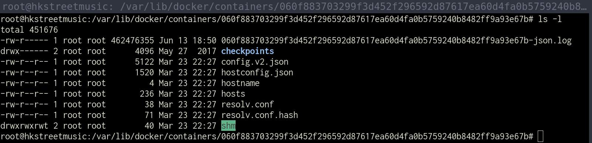

前言 因為之後的專案有可能會用到，所以來記錄一下，新的Docker的使用
Docker安裝 先移除上一版的Docker
1 sudo apt-get remove docker docker-engine docker.io containerd runc
使用repository來安裝
1 2 3 4 5 6 7 sudo apt-get update sudo apt-get install \ apt-transport-https \ ca-certificates \ curl \ gnupg \ lsb-release
Add Docker’s official GPG key:
1 sudo curl -fsSL https://download.docker.com/linux/ubuntu/gpg | sudo gpg --dearmor -o /usr/share/keyrings/docker-archive-keyring.gpg
設定stable版的庫
1 2 3 echo \ "deb [arch=amd64 signed-by=/usr/share/keyrings/docker-archive-keyring.gpg] https://download.docker.com/linux/ubuntu \ $(lsb_release -cs) stable" | sudo tee /etc/apt/sources.list.d/docker.list > /dev/null
安裝Docker引擎
1 2 sudo apt-get update sudo apt-get install docker-ce docker-ce-cli containerd.io
列出Docker版本
1 apt-cache madison docker-ce
將第四列的字串代入ex5:18.09.1~3-0~ubuntu-xenial
1 2 3 sudo apt-get install docker-ce=<VERSION_STRING> docker-ce-cli=<VERSION_STRING> containerd.io sudo apt-get install docker-ce=5:19.03.15~3-0~ubuntu-bionic docker-ce-cli=5:19.03.15~3-0~ubuntu-bionic containerd.io sudo apt-get install docker-ce=5:20.10.8~3-0~ubuntu-bionic docker-ce-cli=5:20.10.8~3-0~ubuntu-bionic containerd.io
測試是否正常
1 sudo docker run hello-world
移除docker engine
1 sudo apt-get purge docker-ce docker-ce-cli containerd.io
移除docker相關的資料
1 2 sudo rm -rf /var/lib/docker sudo rm -rf /var/lib/containerd
設定開機啟動 開始和關畢的指令
1 2 3 sudo systemctl enable docker sudo systemctl start docker sudo systemctl stop docker
docker的設定 設定檔的位置
1 sudo vim /etc/docker/daemon.json
設定的資料
bip:設定docker的ip
data-root:docker的使用資料
1 sudo mkdir -p /data/docker
live-restore:容器掛了，是否執行
1 2 3 4 5 { "bip" : "172.17.0.1/24" , "data-root" : "/data/docker" , "live-restore" : true }
相關的指令
1 2 sudo docker run hello-world sudo docker info
查詢,pull, 列出 docker image
1 2 3 4 5 sudo docker search alpine sudo docker pull alpine sudo docker pull alpine:3.10.3 sudo docker images sudo docker image ls
將image id 打上自已的標籤
1 2 3 4 ubuntu@nvt-nginx-1:~$ sudo docker image ls REPOSITORY TAG IMAGE ID CREATED SIZE hello-world latest d1165f221234 2 months ago 13.3kB alpine 3.10.3 965ea09ff2eb 18 months ago 5.55MB
打上tag sudo docker tag imageid name:version
1 sudo docker tag 965ea09ff2eb myaline:v3.10.3
查看
1 2 3 4 5 ubuntu@nvt-nginx-1:~$ sudo docker image ls REPOSITORY TAG IMAGE ID CREATED SIZE hello-world latest d1165f221234 2 months ago 13.3kB alpine 3.10.3 965ea09ff2eb 18 months ago 5.55MB myaline v3.10.3 965ea09ff2eb 18 months ago 5.55MB
Docker 容器設置日誌輪替 默認的日誌驅動程式 我們可以為容器配置不同的日誌記錄驅動程式，默認情況下容器的 stdout 和 stderr 會被寫入到 /var/lib/docker/containers/[container-id]/[container-id]-json.log 的 json 文件。如果一直無人理會，這個文件最終會佔用大量的磁盤空間，如下圖所示：

手動清除日誌 若果這個 json 日誌文件佔用了大量的磁盤空間，我們可以使用下面的命令清除它。
或者我們可以考慮設置一個 cronjob 來定期清除這些 json 日誌文件，但從長遠來看，最好還是設置日誌輪替。
配置默認的日誌驅動程式 默認的日誌驅動程式可以通過在 /etc/docker/daemon.json 中定義。如果該文件不存在，可以建立該文件。
1 sudo vim /etc/docker/daemon.json
1 2 3 4 5 6 7 { "log-driver" : "json-file" , "log-opts" : { "max-size" : "10m" , "max-file" : "10" } }
以 json-file 作日誌記錄驅動程式還有幾個其它選項，我們甚至可以更改為其他日誌記錄驅動程式，如 syslog 。有關更多信息，請參閱 Docker Docs - Configure logging drivers 。
執行以下命令來重新加載更新後的 daemon.js 。新的配置將在重新啟動後適用於所有新建立的容器。
1 2 sudo systemctl daemon-reload sudo systemctl restart docker
為個別容器配置日誌驅動程式 如果您不想作全局配置，也可以在個別容器級作日誌驅動程式改動。
使用 docker run 命令 我們可以在 docker run 命令中指定日誌記錄驅動程式與其選項。例如：
1 2 3 4 5 docker run \ --log-driver json-file \ --log-opt max-size=10m \ --log-opt max-file=10 \ alpine echo hello world
使用 docker-compose 日誌記錄驅動程式與其選項也可以使用 docker-compose 進行配置。例如：
1 2 3 4 5 6 7 8 9 10 11 version: '3.2' services: nginx: image: 'nginx:latest' ports: - '80:80' logging: driver: "json-file" options: max-size: "1k" max-file: "3"
來看看配置是否成功。
為 Docker 容器設置日誌輪替
建立nginx:v1.19.10_with_stream的Dockerfile 來建立nginx版加上stream的功能
參別人的dockfile
參考資料
https://www.alibabacloud.com/blog/how-to-use-nginx-as-an-https-forward-proxy-server_595799
https://www.nginx.com/blog/tcp-load-balancing-udp-load-balancing-nginx-tips-tricks/
建立資料夾
1 2 3 mkdir dockerfilecd dockerfile/vim Dockerfile
Dockerfile的內容
1 2 3 4 5 6 7 8 9 10 11 12 13 14 15 16 17 18 19 20 21 22 23 24 25 26 27 28 29 30 31 32 33 34 35 36 37 38 39 40 41 42 43 44 45 46 47 48 49 FROM debian:stretch LABEL mantainer ="ttom <ttom921@hotmail.com>" # Version of Nginx to use ENV NGINX_VERSION nginx-1.12.2 # Install dependencies RUN apt-get update && \ apt-get install -y wget libpcre3-dev build-essential libssl-dev zlib1g-dev ca-certificates openssl && \ rm -rf /var/lib/apt/lists/* # Download and decompress Nginx RUN mkdir -p /tmp/build/nginx && \ cd /tmp/build/nginx && \ wget -O ${NGINX_VERSION}.tar.gz https://nginx.org/download/${NGINX_VERSION}.tar.gz && \ tar -zxf ${NGINX_VERSION}.tar.gz # Build and instll Nginx # The default puts everything under /usr/local/nginx,so it's neede to change # it explicitly. Not jst for order but to have it in the PATH RUN cd /tmp/build/nginx/${NGINX_VERSION} && \ ./configure \ --sbin-path=/usr/local/sbin/nginx \ --conf-path=/etc/nginx/nginx.conf \ --error-log-path=/var/log/nginx/error.log \ --pid-path=/var/run/nginx/nginx.pid \ --lock-path=/var/lock/nginx/nginx.lock \ --http-log-path=/var/log/nginx/access.log \ --http-client-body-temp-path=/tmp/nginx-client-body \ --with-http_ssl_module \ --with-threads \ --with-ipv6 \ --with-stream \ --with-stream_ssl_module && \ make -j $(getconf _NPROCESSORS_ONLN) && \ make install && \ mkdir /var/lock/nginx && \ rm -rf /tmp/build # Forward logs to Docker RUN ln -sf /dev/stdout /var/log/nginx/access.log && \ ln -sf /dev/stderr /var/log/nginx/error.log # Set up config file COPY nginx.conf /etc/nginx/nginx.conf EXPOSE 80 443 CMD ["nginx","-g","daemon off;"]
建立docker image
1 2 sudo docker build . -t mynginx:1.12.2_with_stream sudo docker run --rm -it --name ngix00 -p 80:80 mynginx:1.12.2_with_stream
有修改Dockerfile成1.19.10
1 2 3 4 sudo docker build . -t nginx:v1.19.10_with_stream sudo docker run --rm -it --name ngix00 -p 80:80 nginx:v1.19.10_with_stream sudo docker exec -it 4e655a93330f /bin/bash
執行的設定檔的連結
將原來的設定檔拷貝出來
1 docker cp <containerId>:/file/path/within/container /host/path/target
設定檔
1 sudo docker cp a5bc56424878:/etc/nginx /etc/nginx
html檔
1 2 3 4 cd /usr/local/ sudo mkdir nginx cd ~ sudo docker cp a5bc56424878:/usr/local/nginx /usr/local/nginx
起動連接host的資料
1 sudo docker run --rm -it --name nginx00 -p 80:80 -v /etc/nginx:/etc/nginx -v /usr/local/nginhtml:/usr/local/nginx/html nginx:v1.19.10_with_stream
1 sudo docker run --rm -it --name nginx00 -p 80:80 -v /etc/nginx:/etc/nginx -v /usr/local/nginhtml:/usr/local/nginx/html ttom921/nginx:v1.19.10_with_stream
1 sudo docker run --rm -it --name nginx00 -p 80:80 -p 7000:7000 -v /etc/nginx:/etc/nginx -v /usr/local/nginx/html:/usr/local/nginx/html ttom921/nginx:v1.19.10_with_stream
建立uwsgi-nginx-docker的Dockerfile 1 2 mkdir mkdockerfile cd mkdockerfile
Dockerfile的內容
參考
https://stackoverflow.com/questions/17466699/not-able-to-build-a-specific-dockerfile
1 2 3 4 5 6 git clone https://github.com/ttom921/uwsgi-nginx-docker.git cd uwsgi-nginx-docker/ cd docker-images/ sudo service docker restart sudo docker image build -f python3.6.dockerfile . -t ttom/uwsgi-nginx:python3.6
1 2 3 4 5 6 7 sudo docker image build . -t ttom/ubuntu18:python3.6.9 sudo docker image build -f python3.6.9.dockerfile . -t ttom/uwsgi-nginx:python3.6 sudo docker build -f Dockerfile -t hisharp_webfms:python3.6 . sudo docker build -f Dockerfile -t ttom/nginx_uwsgi_py3:alpine3.9 . sudo docker build -f Dockerfile -t webapp . sudo docker run -p 9999:6666 webapp
測試
1 2 3 4 sudo docker run --rm -it --name uwngix00 -p 80:80 ttom/uwsgi-nginx:python3.6 curl http://10.4.7.131 Hello World from a default Nginx uWSGI Python 3.6 app in a Docker container (default)
uwsgi-nginx:python3.7測試 1 2 sudo docker image build -f python3.8-alpine.dockerfile . -t ttom/uwsgi-nginx:python3.8-alpine sudo docker build -f Dockerfile -t hisharp_webfms:python3.8 .
alpine相關 http://5.9.10.113/56021952/gevent-uwsgi-plugin-not-loading-in-alpine-docker
https://github.com/moshangguang/docker-nginx-uwsgi-flask-py3
https://www.itread01.com/content/1546680669.html
https://stackoverflow.com/questions/57787424/django-docker-python-unable-to-install-pillow-on-python-alpine
https://stackoverflow.com/questions/56021952/gevent-uwsgi-plugin-not-loading-in-alpine-docker
uwsgi-gevent-buster相關 https://medium.com/into-the-night/flask-app-with-boto3-uwsgi-and-gevent-in-docker-i-uwsgi-and-gevent-on-python3-7-alpine-image-f0d9c9ac1f5c
1 2 3 4 5 6 7 8 9 10 11 12 13 14 15 16 17 18 19 20 21 22 23 24 $ sudo docker system prune sudo docker build -t gavin/python:latest . --no-cache sudo docker build --tag uwsgi-gevent:buster . curl http://10.4.7.131/long-polling siege -c100 -t60 -v http://10.4.7.131/long-polling sudo docker build --tag tiangolo/uwsgi-nginx:python3.6 -f python3.6.dockerfile . --no-cache sudo docker build --tag nginx-uwsgi-gevent:3.6 . sudo docker build -f Dockerfile -t gevent_webfms . siege -c20 -t60 -v http://127.0.0.1:5000/long-polling siege -c100 -t60 -v http://10.4.7.131/long-polling curl http://10.4.7.131/long-polling curl http://192.168.40.191/long-polling siege -c100 -t60 -v http://192.168.40.191/long-polling curl http://192.168.40.191:8880/long-polling
Docker指令 記錄一下使用到的指令
查看所有正在運行的docker 列出所有的容器 ID 移除所有不執行的contaner 1 sudo docker rm $(sudo docker ps -aq)
停止所有的容器 1 sudo docker stop $(sudo docker ps -aq)
查看容器所有信息 1 sudo docker inspect CONTAINER_ID
查看容器日誌 1 sudo docker container logs CONTAINER_ID
進入容器 1 sudo docker exec -it CONTAINER_ID /bin/bash
刪除容器 1 sudo docker rm CONTAINER_ID
移除所有未使用的 Docker 項目 1 sudo docker system prune
删除所有的容器 1 sudo docker rm $(sudo docker ps -aq)
删除所有的镜像 1 sudo docker rmi $(sudo docker images -q)
复制文件 1 2 sudo docker cp mycontainer:/opt/file.txt /opt/local/ sudo docker cp /opt/local/file.txt mycontainer:/opt/
檢查設定是否正確 1 sudo docker-compose config
docker.io的登入 1 sudo docker login docker.io
Push Image 1 2 3 4 5 6 7 8 9 10 11 ubuntu@nvt-nginx-1:~$ sudo docker image ls REPOSITORY TAG IMAGE ID CREATED SIZE nginx v1.19.10_with_stream 9149e4e0458c 46 minutes ago 356MB nginx v1.12_with_stream 4e520a7877a5 About an hour ago 355MB mynginx 1.12.2_with_stream 4e520a7877a5 About an hour ago 355MB <none> <none> 13a3798ad3a2 2 hours ago 132MB <none> <none> 5130402b6304 2 hours ago 117MB debian stretch fe718d1e4082 3 weeks ago 101MB hello-world latest d1165f221234 2 months ago 13.3kB alpine 3.10.3 965ea09ff2eb 18 months ago 5.55MB myaline v3.10.3 965ea09ff2eb 18 months ago 5.55MB
1 2 3 4 sudo docker tag nginx:v1.19.10_with_stream ttom921/nginx:v1.19.10_with_stream sudo docker push ttom921/nginx:v1.19.10_with_stream
Docker compose 當想要佈署的 docker container 超過一個以上時，會突然發現 docker run 這個指令打到手軟，特別是當要跑起來的容器還要掛載一堆本地端資料夾，一直寫 -v /home/.../.../HostData1:/home/mountData -v /home/.../HostData2:/home/mountData2 簡直是記憶力大考驗。這時候就是拿出 Docker Compose 這個工具的時候了~~
安裝 最新版下載
1 sudo curl -L "https://github.com/docker/compose/releases/download/1.29.2/docker-compose-$(uname -s)-$(uname -m)" -o /usr/local/bin/docker-compose
1 sudo curl -L "https://github.com/docker/compose/releases/download/1.24.0/docker-compose-$(uname -s)-$(uname -m)" -o /usr/local/bin/docker-compose
更新權限
1 2 sudo chmod +x /usr/local/bin/docker-compose sudo docker-compose -version
移除
1 sudo rm /usr/local/bin/docker-compose
1 sudo apt-get remove docker-compose
如何寫docker-compose 先來檢查docker image
1 2 3 4 5 6 7 8 9 sudo docker image ls REPOSITORY TAG IMAGE ID CREATED SIZE ttom921/nginx v1.19.10_with_stream 114608bbca8f 3 days ago 356MB <none> <none> 13a3798ad3a2 3 days ago 132MB <none> <none> 5130402b6304 3 days ago 117MB debian stretch fe718d1e4082 4 weeks ago 101MB hello-world latest d1165f221234 2 months ago 13.3kB alpine 3.10.3 965ea09ff2eb 18 months ago 5.55MB myaline v3.10.3 965ea09ff2eb 18 months ago 5.55MB
因為要使用nginx, 因為參數太多了所以使用docker compose
1 2 cd ~ vim docker-compose.yml
1 2 3 4 5 6 7 8 9 10 11 12 13 14 15 16 version: '3' services: nginx_server: image: ttom921/nginx:v1.19.10_with_stream ports: - "80:80" - "8080:8080" - "1935:1935" - "2181:2181" - "9091:9091" - "9092:9092" - "9093:9093" volumes: - /etc/nginx:/etc/nginx - /usr/local/nginx/html:/usr/local/nginx/html container_name: nginx00
第一行 version 一定要寫
services 定義所有的容器內容及相關細項
image:docker pull 的 image 名稱和 tag
ports 這邊指明 8000:8000 的對映關係，就跟 docker run -p 8000:8000 一樣意思
volumes 這邊指定需要掛載本地端到容器內的資料夾，就跟 docker run -v aaa:bbb 一樣意思甚至這邊可以掛載多個還可以一次寫滿寫好
container_name 可以指定當容器啟動時的預設名稱
如何使用 首先，請確定沒有任何其他複本的應用程式和資料庫正在執行 (docker ps 和 docker rm -f <ids>)
起動
1 sudo docker-compose up -d
關畢
1 sudo docker-compose down
參考資料 利用 Docker Compose 管理多個容器
Openstreetmap的Docker相關 因為在使用openstreetmap時，需要有路徑導航的api，有人有open source，但是需要Docker來安裝，所以就也先來安裝Ubuntu18.04.3服務版
安裝Docker 先在Ubuntu來安裝
1 sudo curl -sSL https://get.docker.com/ | sh
使用者加入
1 sudo usermod -aG docker ttom
更新Docker run
1 sudo apt-get update && sudo apt-get upgrade
目前 Docker 有支援 Linux、Mac 跟 Windows，到 Docker Store 找到適合自己的版本，安裝完之後跑 docker version，有跑出版本就代表安裝成功了～
完成後跑 docker image ls 可以看到有一個 ubuntu 的 image
1 2 REPOSITORY TAG IMAGE ID CREATED SIZE ubuntu latest 775349758637 5 weeks ago 64.2MB
首先透過下列指令安裝 Docker Compose。
1 sudo curl -L "https://github.com/docker/compose/releases/download/1.25.0/docker-compose-$(uname -s)-$(uname -m)" -o /usr/local/bin/docker-compose
安裝完畢之後我們需要給予 Docker Compose 一定的執行權限。
1 sudo chmod +x /usr/local/bin/docker-compose
Docker相關操作 stop all containers:
1 sudo docker kill $(sudo docker ps -q)
remove all containers**
1 sudo docker rm $(sudo docker ps -a -q)
remove all docker images
1 sudo docker rmi $(sudo docker images -q)
查看所有docker的運行
查看docker的運作的container
停止運行的container
1 sudo docker stop <container_id>
列出docker的image
刪除用不到的image
1 sudo docker rmi <container_id>
1 git clone https://github.com/GIScience/openrouteservice.git
建立它的DockerImage 到它的目錄下ttom@ub64docktest:~/openrouteservice/docker$，執行sudo docker-compose up -d會有下面的錯誤，以下面步驟來解決
出現啟動 docker-compose 發生 ERROR: Couldn’t connect to Docker daemon at http+docker://localunixsocket - is it running? 錯誤
Step 1. 將當前用戶加入 docker 群組 1 sudo gpasswd -a ${USER} docker
Step 2. 退出當前用戶 Step 3. 再次切换到 ubuntu 用戶 Step 4. 啟動 docker-compose 重新建置dock
1 sudo docker-compose build
最後產生它的DockerImage如下
1 2 3 4 REPOSITORY TAG IMAGE ID CREATED SIZE docker_ors-app latest cc179fe7c398 17 hours ago 1.03GB openjdk 8-jdk 09df0563bdfc 2 weeks ago 488MB ubuntu latest 775349758637 5 weeks ago 64.2MB
使用指令來進入
1 sudo docker exec -it <container_id> /bin/bash
查看docker里面的logs
1 sudo docker logs <container_id>
可以瀏覽器來測試
1 2 http://172.18.2.48:8080/ors/health http://172.18.2.48:8080/ors/status
更新地圖
將下載後的地圖檔放在docker/data下
修改docker-compose.yml中的OSM_FILE的pbf檔
重新建置dockimage
注意 如果有更換地圖，要重新來建置dock的image，地圖大小會影響地圖準備好的時間，可以下查看一下log是否有錯誤sudo docker logs <container_id>
1 2 3 4 5 6 7 8 9 10 11 12 13 14 15 16 17 18 19 version: '3' services: ors-app: container_name: ors-app ports: - 8080 :8080 build: context: ../ args: APP_CONFIG: ./docker/conf/app.config.sample OSM_FILE: ./docker/data/heidelberg.osm.gz volumes: - ./graphs:/ors-core/data/graphs - ./elevation_cache:/ors-core/data/elevation_cache - ./logs/ors/:/var/log/ors/ - ./logs/tomcat/:/usr/local/tomcat/logs environment: - JAVA_OPTS=-Djava.awt.headless=true -server -XX:TargetSurvivorRatio=75 -XX:SurvivorRatio=64 -XX:MaxTenuringThreshold=3 -XX:+UseConcMarkSweepGC -XX:+UseParNewGC -XX:ParallelGCThreads=4 -Xms1g -Xmx2g - CATALINA_OPTS= -Dcom.sun.management.jmxremote -Dcom.sun.management.jmxremote.port=9001 -Dcom.sun.management.jmxremote.rmi.port=9001 -Dcom.sun.management.jmxremote.authenticate=false -Dcom.sun.management.jmxremote.ssl=false -Djava.rmi.server.hostname=localhost
參考資料 Docker 實戰系列（一）：一步一步帶你 dockerize 你的應用
啟動 docker-compose 發生 ERROR: Couldn’t connect to Docker daemon at http+docker://localunixsocket - is it running? 錯誤
https://hub.docker.com/_/ubuntu
地圖分割
dock操作